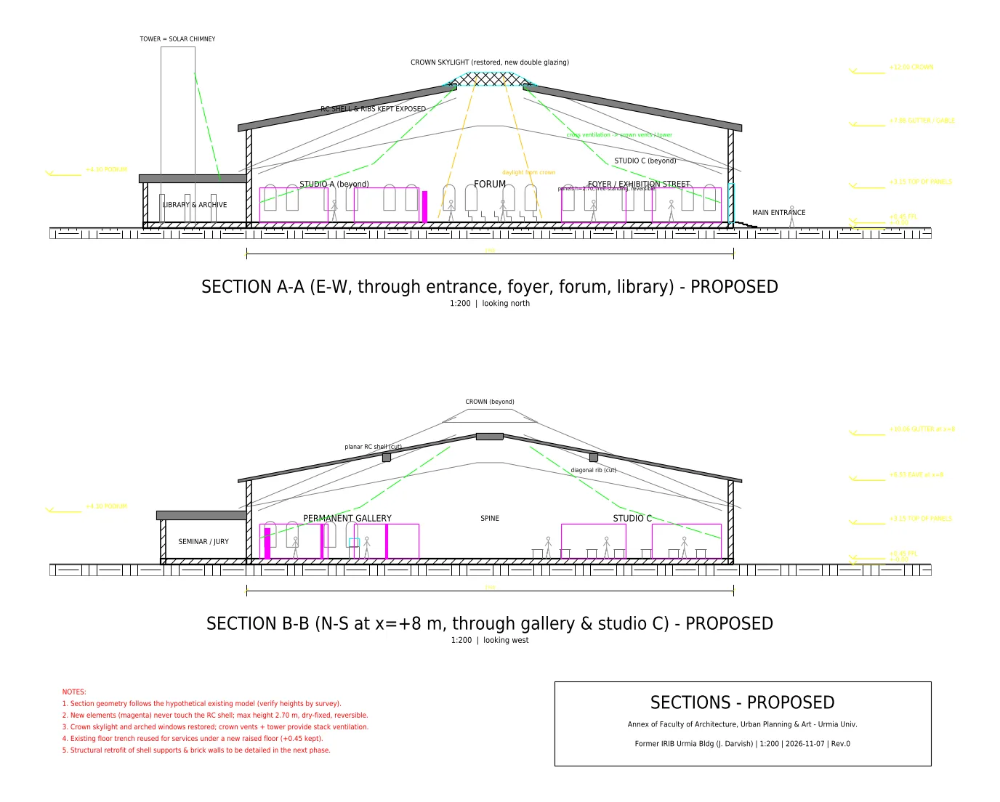

۱. بنا
ساختمان قدیمی رادیو و تلویزیون ارومیه، کنار بزرگراه خاتمالانبیا و خیابان لطفی، از چهار حجم مربعی با بام شیبدار تشکیل شده که دور یک شکاف صلیبی و روی یک سکوی دندانهدار چیده شدهاند. سطح اشغال بنا حدود ۲۰۰۰ مترمربع است و یک دوربرگردان دایرهای به قطر حدود ۹۵ متر جلوی آن قرار دارد.
مهمترین ویژگیاش سالن اصلی است: حدود ۳۷ در ۳۷ متر، پوشیده با چهار پوستهی بتنمسلح حدود ۱۵ سانتیمتری که با تیغههای قطری و ناودانهای صلیبی بار را به پایههای آجری میرسانند. نورگیر تاج، در ارتفاع حدود ۱۲ متر، وسط سالن را روشن میکند.

۲. آسیبها
از روی تصاویر منتشرشده، مهمترین آسیبها اینها هستند: نفوذ آب از بام فرسوده و پوسته شدن بتن زیر پوستهها و ناودانها، آثار دوده و آتشسوزی روی دیوارها و سقف، و سقفهای کاذب آویزان. قضاوت نهایی دربارهی هر کدام فقط بعد از بازدید و آزمایش ممکن است.
۳. چه کاربریای؟
برای این بنا کاربری موزه اعلام شده است. این مطالعه سه گزینه را با هفت معیار مقایسه کرده و یک گزینهی دیگر پیشنهاد میکند: پردیس الحاقی دانشکدهی معماری، شهرسازی و هنر دانشگاه ارومیه، که فقط حدود ۱۹۰ متر فاصله دارد. خوشهی موزههای شهر حدود ۵٫۳ کیلومتر دورتر و در مسیر گردشگری مرکز شهر است.
| گزینه | امتیاز وزنی (از ۱۰۰) |
|---|---|
| پردیس دانشگاهی + گالری عمومی | ۹۲ |
| اداری | ۵۹ |
| موزه | ۵۳ |
بخش موزهای حذف نمیشود: یک گالری دائمی دربارهی تاریخ بنا، آثار جهانگیر درویش و تاریخ رادیو و تلویزیون ارومیه، به روی عموم باز میماند.

۴. طرح پیشنهادی
ایدهی اصلی این است که سالن بیستون یک فضا باقی بماند. هیچ عنصر جدیدی به پوستهی بتنی نمیرسد؛ فضاها با پانلهای مستقل و برگشتپذیر به ارتفاع ۲٫۷۰ متر تعریف میشوند تا سقف از همهجای سالن دیده شود.
- محورهای صلیبی زیر ناودانها «خیابان نمایشگاهی» میشوند و مرکز سالن، زیر نورگیر، «فوروم» برای ژوری و سخنرانی.
- چهار ربع سالن: سه آتلیهی طراحی و یک گالری دائمی.
- خدمات فقط در حجمهای کوتاه پیرامونی؛ برج آجری به دودکش خورشیدی برای تهویهی طبیعی تبدیل میشود.
- جمع زیربنای مفید حدود ۱۷۳۵ مترمربع: ۵۵٪ آموزشی، ۳۵٪ عمومی.


۵. مقاومسازی
اصول کار: کمترین مداخله، سازگاری مصالح، برگشتپذیری و حفظ آجر نما و پوستهی بتنی که سیمای اصلی بنا هستند. برآورد مقدماتی نشان میدهد مهمترین ضعف، پایداری دیوارهای آجری بلند و لاغر در برابر نیروی خارج از صفحه است.
- مهاربندهای قائم فولادی پشت دیوارها و یک تیر حلقوی پیوسته در بالای دیوار، که پوسته را هم به دیوار وصل میکند.
- تقویت برشی دیوارها با روکش TRM با ملات آهکی، به جای پوشش بتنی ضخیم.
- ارزیابی پوستهی بتنی با مغزهگیری و آزمایش خوردگی؛ در صورت نیاز تقویت با الیاف کربن.
مبنا: دستورالعمل بهسازی لرزهای ساختمانهای موجود (نشریهی ۳۶۰) و ساختمانهای بنایی غیرمسلح (نشریهی ۳۷۶). طراحی نهایی بعد از برداشت دقیق، آزمایش مصالح و تحلیل غیرخطی، با طیف ویرایش پنجم استاندارد ۲۸۰۰، انجام میشود.

خاطره یا عکسی از این ساختمان دارید؟
اگر در این ساختمان کار کردهاید یا عکس قدیمی از آن دارید، خوشحال میشویم برایمان بفرستید. با اجازهی شما و با ذکر نام، در گالری پرونده قرار میگیرد.